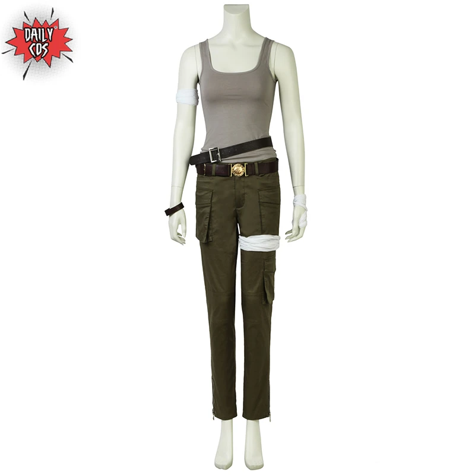
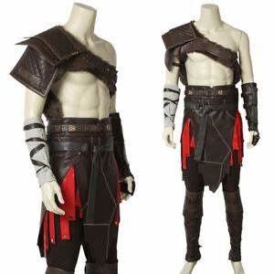
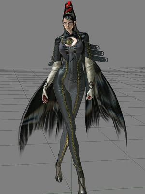
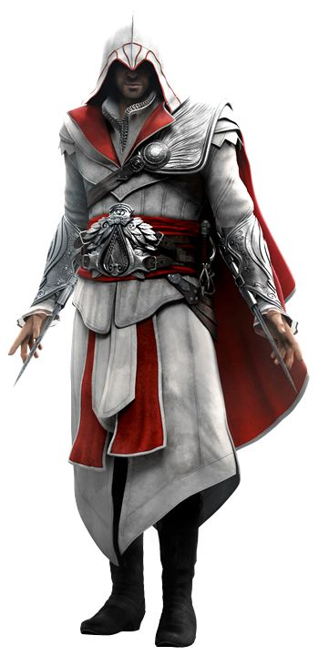
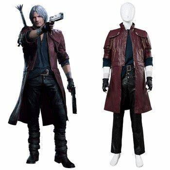

1. Lara Croft - Tomb Raider
A icônica personagem Lara Croft é conhecida não apenas por suas habilidades de ação e aventura, mas também por sua icônica roupa de caçadora de tesouros. A combinação de shorts curtos, top e jaqueta é funcional e estilosa.

2. Kratos - God of War
O personagem Kratos é conhecido por seu visual intimidador e roupas de guerreiro. Sua tatuagem vermelha, pele cinza e armadura de couro e metal são uma combinação perfeita para o cenário sombrio em que se passa o jogo.

3. Bayonetta - Bayonetta
A personagem Bayonetta é famosa por seu visual poderoso. Seu traje de bruxa é composto por um corset, salto alto e longas luvas. Além disso, ela usa armas mágicas em suas batalhas, tornando-a uma personagem única e interessante.

4. Ezio Auditore - Assassin's Creed
O personagem Ezio Auditore é conhecido por seu estilo elegante e refinado. Sua roupa de assassino é composta por um manto, capuz e cinto com lâminas ocultas. A combinação de cores preto e branco dá a ele um visual clássico e sofisticado.

5. Aloy - Horizon Zero Dawn
A personagem Aloy é uma caçadora e arqueira habilidosa, que vive em um mundo pós-apocalíptico repleto de robôs. Sua roupa é feita de couro e peles de animais, tornando-a camuflada em seu ambiente natural. O visual dela é único e ajuda a destacar a personalidade forte da personagem.

5 Roupas Terríveis
1. Sonic - Sonic the Hedgehog
O visual do Sonic tem sido alvo de críticas há anos. Seu corpo azul com pernas finas e sapatos vermelhos é icônico, mas o visual geral deixa a desejar. Além disso, sua boca desproporcional e olhos grandes demais fazem com que ele pareça estranho.
2. Ada Wong - Resident Evil
A personagem Ada Wong é conhecida por suas roupas estranhas e impraticáveis. Sua roupa vermelha com uma fenda enorme na frente não parece ser a melhor escolha para uma missão perigosa em um mundo pós-apocalíptico cheio de zumbis. Além disso, sua maquiagem pesada e cabelo longo e liso são um pouco exagerados para um cenário de terror.

3. Ivy Valentine - Soul Calibur
A personagem Ivy Valentine é conhecida por seu traje provocante e exagerado. Sua roupa é composta por um corset apertado e uma saia com fendas que deixam pouco para a imaginação. Além disso, sua arma é uma espada em forma de chicote, o que parece um pouco impraticável para uma luta real.

4. Chun-Li - Street Fighter
A personagem Chun-Li é conhecida por seu estilo de luta habilidoso e seu visual de coquetel. Sua roupa é composta por um vestido curto, botas de cano alto e uma fita na cabeça. Apesar de seu visual icônico, a roupa parece pouco prática para lutar.

5. Dante - Devil May Cry
O personagem Dante é conhecido por seu visual exagerado e cheio de acessórios. Sua roupa é composta por uma jaqueta vermelha, calças de couro, botas e vários acessórios como correntes e colares. Apesar de ser estiloso, seu visual parece um pouco forçado e impraticável para combates.
